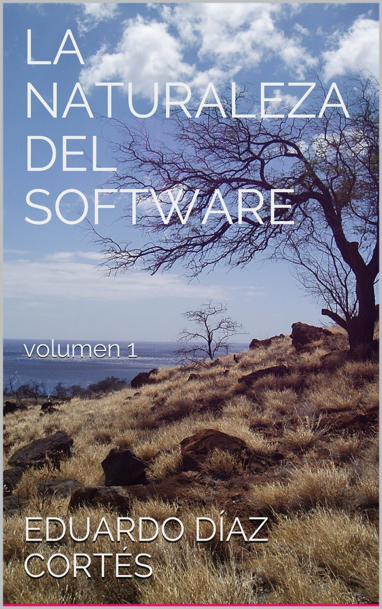

Novedades
Quería compartir varias buenas noticias con ustedes amigos. Primero, al momento de escribir este post mi primer ebook “La Naturaleza Del Software - volumen 1” ha cumplido 12 días publicado, está acercándose a las 400 descargas y se encuentra #1 en el entre los bestsellers en computación en internet para libros en español de Kindle.

Por cierto que estoy muy contento y orgulloso, se que varios de ustedes han ayudado a lograr este hito, se los agradezco muchísimo. Para los que no lo han comprado aún, les comunico que hasta el próximo viernes 22 de noviembre de 2013 el libro se encuentra en un precio oferta especial, casi a un tercio de su valor original, pueden adquirirlo en amazón aquí.
Muchas personas han preguntado por otros formatos, tal como comenté el día del lanzamiento en este mismo blog, el libro se encuentra sólo disponible en amazon hasta fines de enero, luego de esta fecha será lanzado en la plataforma iBook de Apple. De todas maneras, pueden usar la aplicación de Kindle reader disponible para varios dispositivos para leerlo. Con respecto a la versión impresa, estoy en conversaciones para concretarla, pero les pido paciencia, yo también quiero tener el papel en mis manos, así que créanme que lograré concretar el libro lo más pronto que pueda.
Una nota importante, en las próximas semanas publicaré una serie de mini libros en formato digital, en este caso estarán disponibles en más plataformas y corresponden a una serie de artículos que sirven de complemento a cada una de las cuatro partes de libro. Así que atentos, si quieren estar actualizados de las novedades de este libro, y de los futuros volúmenes de La Naturaleza Del Software pueden subscribirse a la mailing list de la Naturaleza del Software en esta dirección: http://eepurl.com/IS8gb.
Si no lo notaron, en la parte superior de este sitio ahora hay una sección nueva titulada Libros, que también sirve para mantenerlos informados de lo que viene.
Muchas gracias a todos ustedes, y recuerden comprar el libro, ¡y compartir sus reviews!